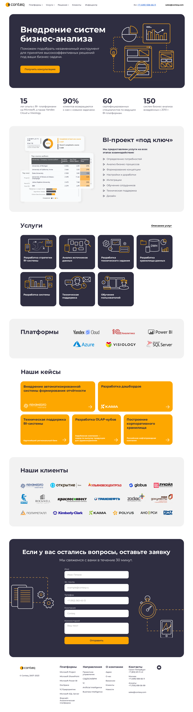
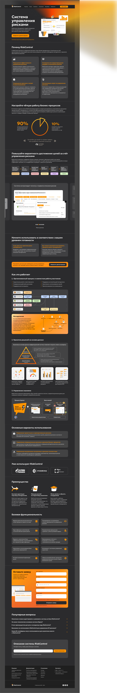
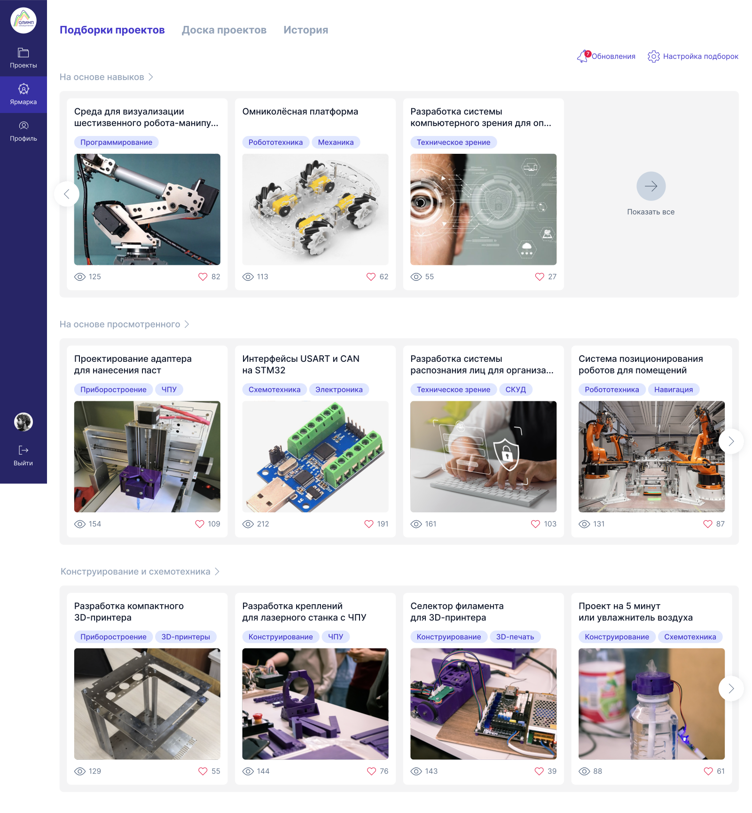
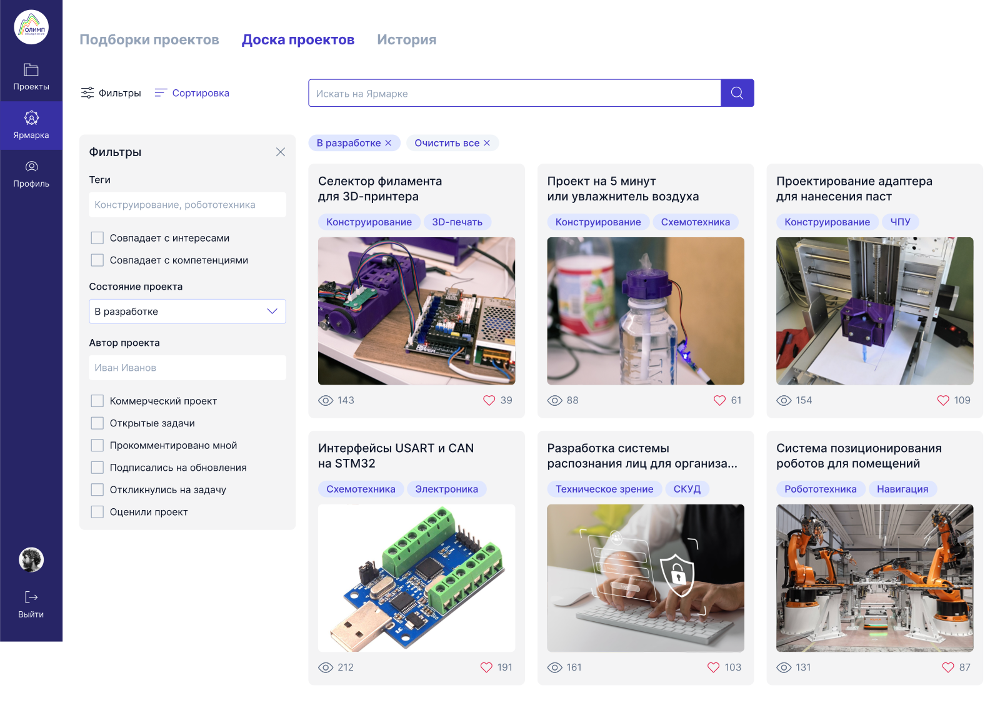
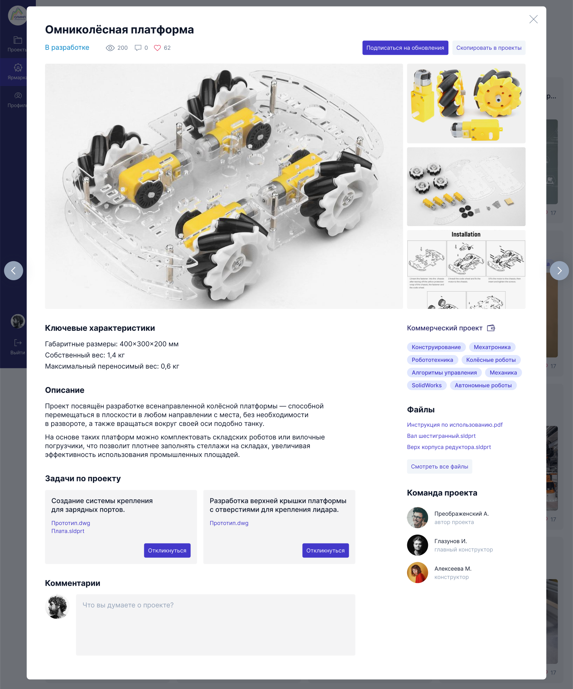
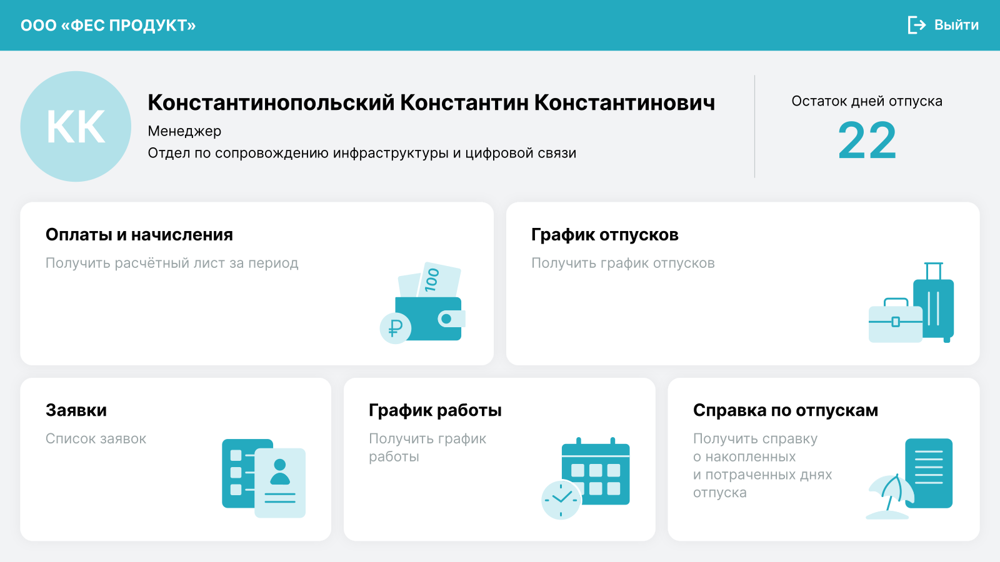
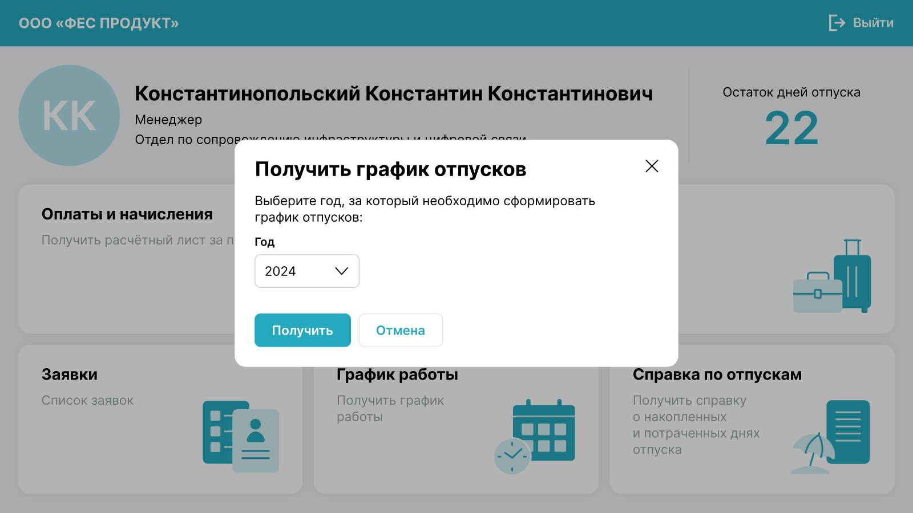

Лендинги на Tilda
Сайты для компании Контек и её направлений: главная iSpace, лендинг RiskControl, страницы BI, 1С и AI







В Университете ИТМО спроектировала веб-портал лаборатории ОЛИМП. Участники рассказывают на нём о своих компетенциях и проектах, а в ярмарке проектов можно найти проект по подборкам, на доске с фильтрами и в подробной карточке.
Продумала информационную архитектуру, навигацию, профиль участника и сценарии поиска проектов
Сайты для компании Контек и её направлений: главная iSpace, лендинг RiskControl, страницы BI, 1С и AI


Портал сотрудника для сенсорных стоек на заводе: вход по номеру телефона, заявки на справки и продление патента, начисления, графики работы и отпусков


Отдельный раздел портала лаборатории для знакомства с проектами